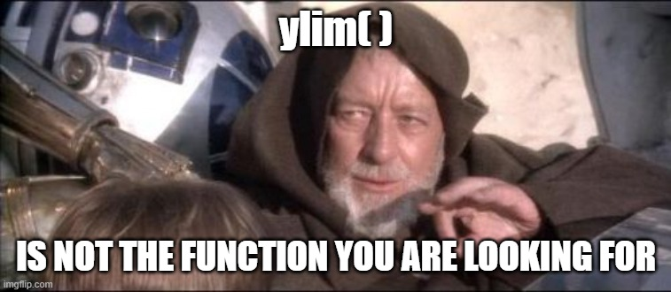
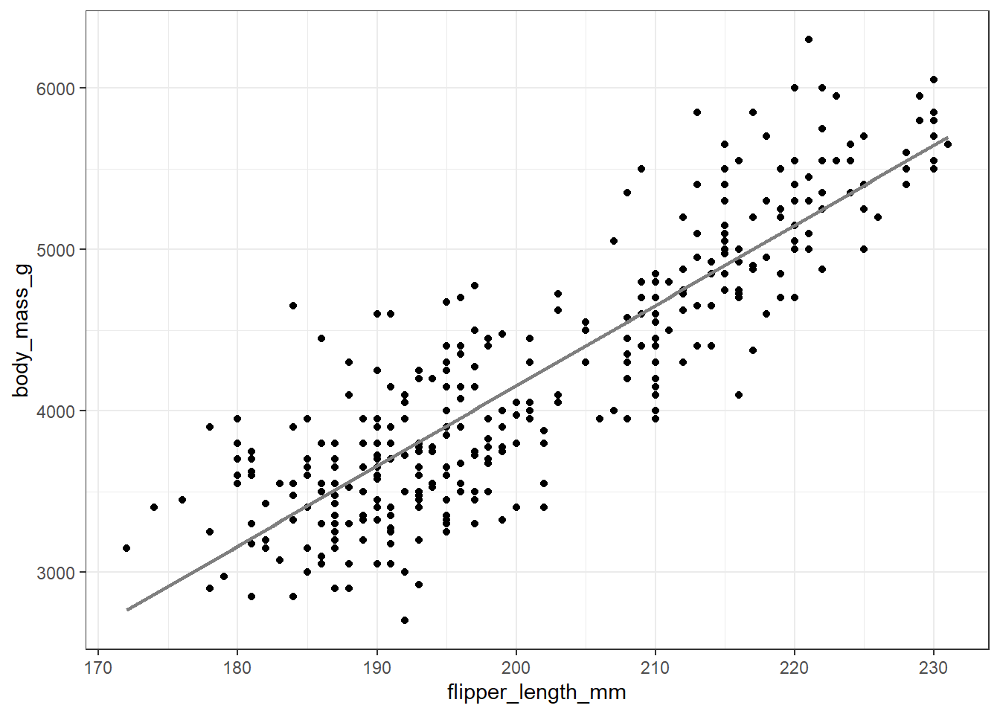
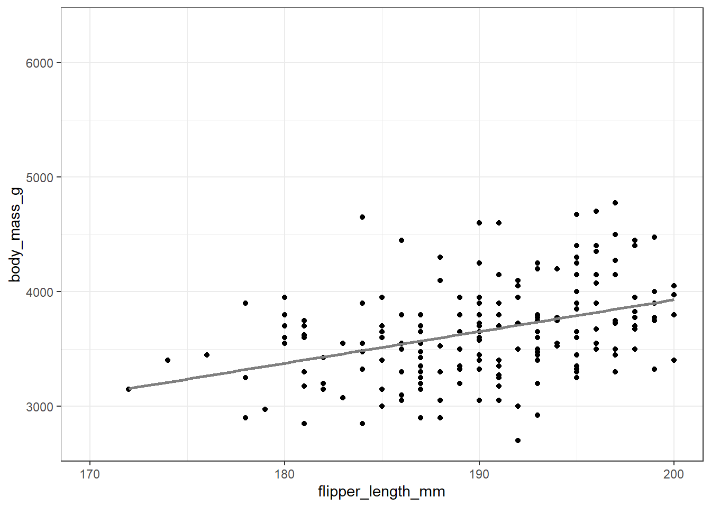

I recently went down a bit of an educational rabbit 🐇 hole with ggplot is setting axis limits. So I thought I would share some insights I gathered along the way.
It all started with a simple barplot 📊 using ggplot2. Typically, I prefer to filterthe data before plotting, avoiding axis limits. However, on this occasion, I wanted to focus in on the differences between values that were relatively small compared to the overall bars. Queue example data 👇
And boom! 💥 Everything disappeared. Initially, I was puzzled 🤔 Where did my bars go? After some digging, I realised that ylim() was not the function I was looking for.

The ylim() function removes 🧹 any data outside the specified range. Since I chose a barplot, the bars extend from 0 on the y-axis to the sample value, resulting in them being removed. If I had used geom_point, everything would have been fine:
Using coord_cartesian, all the underlying data is retained, but the plot is zoomed in as if using a magnifying glass. 🔍 ✅
Now, you might think this is only relevant for bar plots. However, let’s explore why it’s important even for scatter plots with geom_point.
Consider data with a strong linear correlation. What happens when we limit the x-axis? Instead of just showing a zoomed-in focus, the linear regression is recalculated with only the data in view, resulting in a misleading correlation:
library(palmerpenguins)data(penguins)ggplot(data = penguins, aes(x = flipper_length_mm, y = body_mass_g)) +geom_point() +geom_smooth(method ="lm", se =FALSE, color ="gray50") +theme_bw()
`geom_smooth()` using formula = 'y ~ x'

ggplot(data = penguins, aes(x = flipper_length_mm, y = body_mass_g)) +geom_point() +geom_smooth(method ="lm", se =FALSE, color ="gray50") +theme_bw() +xlim(170, 200)
`geom_smooth()` using formula = 'y ~ x'

You can see that depending on the context this approach could be problematic.
Or, let’s say you’re inspecting time series data, such as growth over time:
And you wanted to focus in on early growth. If you used xlim() instead of coor_cartesian(), you will notice below that the last piece of informative data, that the growth recovers and continues to increase, is lost.
While most statistics are computed before plotting, and therefore this may not drastically change data interpretation, using coord_cartesian() ensures you’re zooming in rather than trimming data.
Maybe you have already been through this journey and understanding all the axis limiting methods. If not hopefully though this post helps someone else.